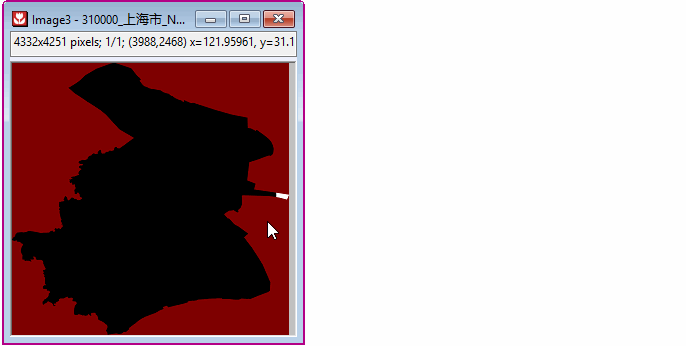

GeoTIFF importieren und verarbeiten
GeoTIFF-Importing-Processing
Ein GeoTIFF ist ein Standard für ein .tif- oder Bilddateiformat, das zusätzliche räumliche Informationen (Georeferenzierung) in Form von Tags in der .tif-Datei eingebettet hat. Seit 2022b können Sie GeoTIFF-Dateien einfach in Origin verarbeiten.

GeoTIFF importieren
Als Bilder importieren
- Um eine GeoTIFF-Datei zu importieren:
Wählen Sie Datei: Neu: Bild: Bild/Video, um das GeoTIFF als Bild in Origin zu öffnen.
- Um mehrere GeoTIFF-Dateien zu importieren:
Wählen Sie Datei: Neu: Bild: Mehrere Bilddateien, um mehrere GeoTIFF-Dateien als Bild in Origin zu öffnen.
Als Matrix importieren
- Aktivieren Sie eine Matrix, wählen Sie Daten: Aus Datei importieren: Bild in Matrix und wählen Sie die importierten Dateien.
- Aktivieren Sie im Dialog Bild in Matrix das Kontrollkästchen Graustufiges GeoTIFF als Daten importieren.
GeoTIFF exportieren
Beim Exportieren von Bildern und Matrizen in GeoTIFF sollten Sie das Kontrollkästchen Als graustufiges GeoTIFF exportieren. Dies sorgt dafür, dass die GeoTIFF-Optionen in diesen Dialogen angezeigt werden.
-
- Legen Sie GT-Modell, EPSG, Winkeleinheiten und Vertikale Einheiten nach Bedarf fest.
- Die Einstellungen, die GeoTIFF vordefiniert sind, werden abgeblendet und sind nicht bearbeitbar.
GeoTIFF als Bilder exportieren
- Wählen Sie Datei: Bild exportieren im Menü, um den Dialog Bild exportieren zu öffnen (X-Funktion = cvExport).
- Aktivieren Sie das Kontrollkästchen Als graustufiges GeoTIFF exportieren.
- Sie können die Optionen GT-Modell, EPSG und Einheiten für die GeoTIFF-Datei benutzerdefiniert anpassen.
| Hinweis: Sollte das Bild in Origin aus einer GeoTiFF-Datei stammen, wird es mit den Standardwerten in GT-Modell, EPSG und Einheiten wieder in GeoTIFF exportiert. |
GeoTIFF als Matrix exportieren
- Wählen Sie Datei: Export: Bild im Menü, um den Dialog Bild zu öffnen (X-Funktion = expImage).
- Aktivieren Sie das Kontrollkästchen Als graustufiges GeoTIFF exportieren.
- Sie können die Optionen GT-Modell, EPSG und Einheiten für die GeoTIFF-Datei benutzerdefiniert anpassen.
Visualisieren und Verarbeiten
Bereich von Interesse im GeoTIFF extrahieren
- Bei einer Matrix können Sie mit dem Hilfsmittel Rechteck/Kreis/Polygon/Region
 einen Bereich als Region-of-Interest (ROI) auswählen und dann Daten aus ihm extrahieren.
einen Bereich als Region-of-Interest (ROI) auswählen und dann Daten aus ihm extrahieren.
Um weitere Informationen zur Profilerstellung von Matrixdaten in einem ROI-Feld im NetCDF zu erhalten, lesen Sie bitte diese Seite.
- Beim Bild extrahieren Sie den Bereich, der Sie interessiert, wie beim Extrahieren aus einer Matrix.
Klicken Sie mit der rechten Maustaste auf Ihr ROI und wählen Sie im Kontextmenü eine Option.
Unterschiedliche Palette anwenden
Farbpalette anwenden
Wenn ein Bild aktiv ist, können Sie die Schaltfläche Palette  und die Schaltfläche Farbe der fehlenden Werte
und die Schaltfläche Farbe der fehlenden Werte  (auf der Minisymbolleiste) verwenden, um die Farbe des Matrixfensters benutzerdefiniert anzupassen.
(auf der Minisymbolleiste) verwenden, um die Farbe des Matrixfensters benutzerdefiniert anzupassen.

Wenn Sie die Farbpalette löschen möchten, können Sie das folgende Skript im Skriptfenster ausführen:
img.Palette$="";
Palette umkehren
Wenn auf ein Bild eine Farbpalette angewendet wird, können Sie die Schaltfläche Palette umkehren  (auf der Minisymbolleiste) verwenden, um die Farbe der Palette umzukehren.
(auf der Minisymbolleiste) verwenden, um die Farbe der Palette umzukehren.
Graustufigen Anzeigebereich festlegen
Manchmal stellen Sie fest, dass die Standardanzeige der Graustufen nicht gut genug oder sogar schlecht ist, um sie klar erkennen zu können. Sie können dies beheben, indem Sie den Anzeigebereich der Graustufen festlegen.
1. Anzeigebereich der Graustufe bestimmen
Bei aktivem Bildfenster:
- Wählen Sie im Menü Bild: Graustufiges Histogramm, um den Dialog cvhistogram zu öffnen. Die Verteilung der Pixelintensität wird ausgegeben, aus der die Hauptverteilung einfach abzuleiten ist.
ODER
Falls das Hilfsmittel Graustufiges Histogramm für einige Bilddatentypen nicht verfügbar ist:
- Wählen Sie im Menü Bild: In Spalte konvertieren, um den Dialog cv2col zu öffnen. Die Pixelwerte werden Punkt für Punkt ausgegeben. Sie können die Häufigkeitszählung für die Pixelwerte später durchführen, um die Hauptverteilung zu bestimmen.
2. Anzeigebereich der Graustufe festlegen
Bei aktivem Bildfenster:
- Wählen Sie im Menü Bild: Graustufigen Anzeigebereich festlegen.
oder
- Klicken Sie auf den Rand des Bildfensters, um die Minisymbolleiste aufzurufen. Klicken Sie auf die Schaltfläche
Der Dialog cvgraymax wird geöffnet. Setzen Sie den minimalen und maximalen Pixelwert auf den Hauptverteilungsbereich, der im vorhergehenden Schritt bestimmt wurde.
 |
- Aktivieren Sie bei aktivem Bildfenster im Menü Bild: Graustufiges Histogramm. Geben Sie die Verteilung der Pixelintensität in einem neuen Arbeitsblatt aus.
- Beobachten Sie das Ausgabearbeitsblatt und suchen Sie die Hauptverteilung der Pixelwerte.
- Aktivieren Sie bei aktivem Bildfenster im Menü Bild: Graustufigen Anzeigebereich festlegen. Ändern Sie die minimalen und maximalen Pixelwerte gemäß dem vorhergehenden Schritt.
|
ODER nutzen Sie eine einfachere und interaktivere Methode:
- Klicken Sie auf den Rand des Bildfensters, um die Minisymbolleiste aufzurufen. Klicken Sie dann auf die Schaltfläche Graustufenschieber
 .
.
- Im aufgerufenen Dialog Feineinstellung des Anzeigebereichs können Sie die Pixelwerte für Minimum bzw. Maximum ändern. Ändern Sie Schieber von und Schieber bis gemäß dem Hauptverteilungsbereich, der im vorhergehenden Schritt bestimmt wurde. Ziehen Sie den Schieber dazwischen, um einen "ausreichend guten" Anzeigebereich zu finden.
- 
Größe des GeoTIFF-Bild ändern
Um die Größe des GeoTIFF-Bilds zu ändern, können Sie Bild: Größe ändern auswählen, um den Dialog cvResize zu öffnen, und dann die Interpolationsmethode, um die Bildgröße zurückzusetzen.
Grafische Darstellung
Rasterdaten als Kontur oder Oberfläche zeichnen
Nach dem Import der GeoTIFF-Datei ins Bild können Sie den Bereich von Interesse extrahieren. Wählen Sie Bild: In Matrix konvertieren und verwenden Sie die Matrixdaten, um die Kontur oder Oberfläche und so weiter zu zeichnen.
GeoTIFF als Hintergrund des Diagramms festlegen
- Importieren Sie das GeoTIFF-Bild in ein Bildfenster.
- Aktivieren Sie das Diagrammfenster (wie Kreis-, Balken- oder Blasendiagramm), in das Sie das Bild einfügen möchten. Wählen Sie Einfügen: Bild aus Bildfenster, um das Bild als Hintergrund einzufügen.
Analyse
Importieren Sie die GeoTIFF-Dateien als gestapelte Matrix in Origin. Sie können in Origins Analysehilfsmitteln wie NetCDF-Dateien verwendet werden.